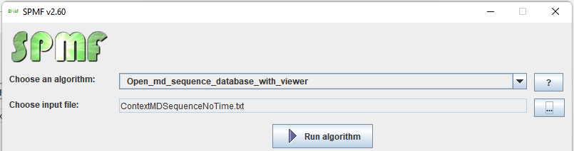
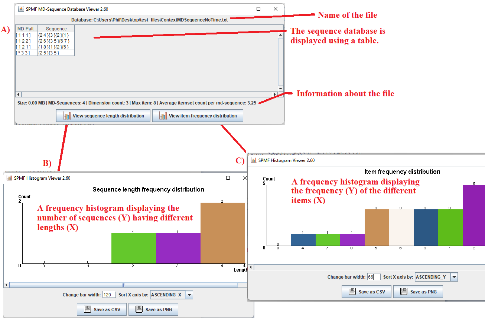

View a multi-dimensional sequence database file with the MD Sequence Database Viewer (SPMF documentation)
Multi-dimensional sequence databases are a type of data taken as input by some algorithms offered in SPMF such as SEQ-DIM and DIM-SEQ .
Put simply, a multi-dimensional sequence database is a set of sequences that are annotated with some attributes (called dimensions)
SPMF offers a tool to view the content of a multi-dimensional sequence database. This tool is called the SPMF MD Sequence Database Viewer.
This page explains how to use this tool with an example.
How to run this example?
If you want to run this example from the graphical interface of SPMF, (1) choose the algorithm "Open_md_sequence_database_with_viewer", (2) choose the ContextMDSequenceNoTime.txt file as input, and then (3) click "run algorithm" .

- If you want to run this example from the source code of SPMF, run the file MainTestMDSequenceDatabaseViewerNoTime, which is located in the package ca.pfv.spmf.tests
- If you want to execute this example from the command line interface of SPMF, then execute this command:
java -jar spmf.jar run Open_md_sequence_database_with_viewer ContextMDSequenceNoTime.txt
in a folder containing spmf.jar and the file ContextMDSequenceNoTime.txt which is included with SPMF.
What is displayed?
After running the example, the content of the file will be displayed by the tool. The picture below shows the user interface of this viewer.
The window A) show in the picture below is the main window. It displays the multi-dimensional sequence database using a table. The table has four rows in this example. Each row is a multi-dimensional sequence that contains two parts: dimension values (called an MD-pattern) and a sequence.
Take the first row as example. It represents a multi-dimensional sequence
The cell in the first column indicates that the values for the three dimensions of this multi-dimensional sequence are 1, 1 and 1, respectively.
The cell in the second column indicates that the sequence is defined as follows. First, two items 2 and 4 were observed, followed by the item 3, followed by the item 2, and finally followed by the item 1.
The other multi-dimensional sequences follow the same format.
Besides, there are buttons that provides additional features:
- By clicking on the button "View sequence length distribution ", a new window is opened, presented as window B) in the picture below. This window displays the frequency histogram of the different sequence lengths in the current file. The number of sequences is the Y axis and the different sequence lengths are the X axis. There are some buttons in this window to export the data from the frequency histogram as a CSV file so that it can be imported in other software (e.g. Excel), or as a picture. Besides some options are provided to adjust the bar width and the order in which the X axis is sorted.
- By clicking on the button "View item frequency distribution ", a new window is opened, presented as window C) in the picture below. This window displays the frequency histogram for the frequency of the different items in the current file. The number of occurrences (or support) is the Y axis and the different items are displayed on the X axis. There are some buttons in this window to export the data from the frequency histogram as a CSV file so that it can be imported in other software (e.g. Excel), or as a picture. Besides some options are provided to adjust the bar width and the order in which the X axis is sorted.

What is the input?
The algorithm takes as input a multi-dimensional sequence database, as used by algorithm such SEQ-DIM and DIM-SEQ .
The database used in this example is provided in the text file "ContextMDSequenceNoTime.txt" in the package ca.pfv.spmf.tests of the SPMF distribution.
The input file format is defined as follows. It is a text file where each line represents a multi-dimensional sequence from a sequence database. Each line is separated into two parts: (1) a MD-pattern (values for some dimensions) and (2) a sequence.
- The first part is a list of dimension values separated by single spaces. A dimension value is a positive integer or the symbol "*" meaning "any values". Finally, the value "-3" indicates the end of the first part. Note that each line should have the same number of dimension values.
- The second part of each line is a sequence. Each item in a sequence is represented by a postive integers and items from the same itemset within a sequence are separated by single space. Note that it is assumed that items within a same itemset are sorted according to a total order and that no item can appear twice in the same itemset. The value "-1" indicates the end of an itemset. The value "-2" indicates the end of a sequence (it appears at the end of each line).
For example, this is the content of the example file "ContextMDSequenceNoTime.txt":
@FILETYPE="Multi-dimensional sequence database"
@SOURCE="SPMF SOFTWARE https://philippe-fournier-viger.com/spmf/"
1 1 1 -3 2 4 -1 3 -1 2 -1 1 -1 -2
1 2 2 -3 2 6 -1 3 5 -1 6 7 -1 -2
1 2 1 -3 1 8 -1 1 -1 2 -1 6 -1 -2
* 3 3 -3 2 5 -1 3 5 -1 -2
The first two lines are metadata indicating the type of file and the source of the data. Then, the following lines are the MD sequences (records). This file contains four MD-sequences (four lines). Each line has 3 dimensions in each MD-Pattern. For example, consider the second line. It represents a MD-sequence where the value for the three dimensions are respectively 1, 2 and 2. Then, the sequence in this MD-Sequence is the itemset {2, 6} followed by the itemset {3, 5}, followed by the itemset {6, 7}.